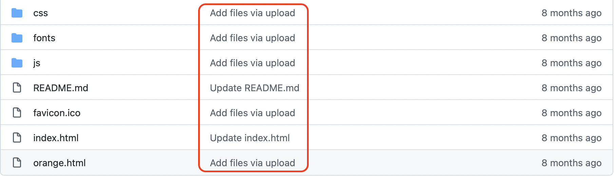
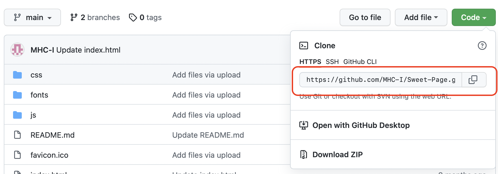

Git的一些常用操作
- 1.
新建仓库

- 1.
本地操作
- 1.
首先进入需要项目文件夹，执行
git init，将目录变成git目录 - 2.
执行
git add .将目录内的所有文件添加到git缓存区 - 3.
执行
git commit -m '说明'将文件提交到仓库，'说明'就是GitHub中如图位置所显示的信息
- 1.
- 2.
远程操作
- 1.
git remote add origin 远程地址，远程地址即GitHub中如图所示的链接
- 2.
可选如果远程库不为空时执行
git pull --rebase origin master，将远程库与本地仓库合并 - 3.
执行
git push -u origin master，将本地仓库内容上传到远程仓库 - 4.
这个时候大概就会提示你需要用户名，密码，输入完成后即可上传
- 1.
- 1.
- 2.
忽略文件
- 1.
进入仓库文件夹
- 2.
touch .gitignore，.gitignore文件 - 3.
打开.gitignore文件，添加内容忽略文件
temp //忽略根目录temp文件夹 */.Ds_Store //忽略仓库所有.Ds_Store文件
- 1.